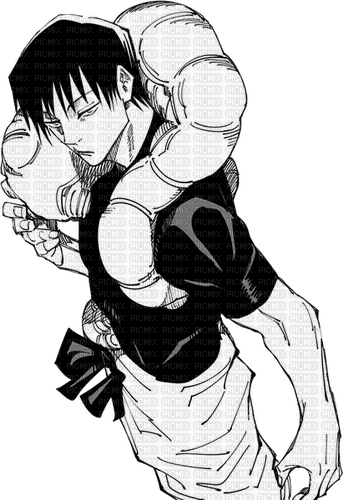

Toji utilizes Judo's throws, sweeps, and grappling to unbalance and slam opponents, capitalizing on his superior strength and timing. Judo's principle of using an enemy's momentum against them resonates with Toji's clever feints and counters. The quote highlights his masterful redirection, turning an opponent's energy into devastating, ground-shaking throws.
